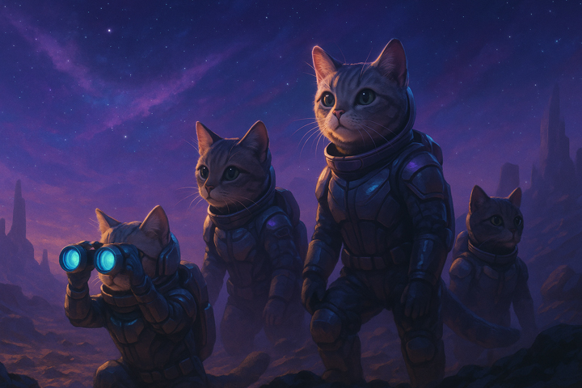
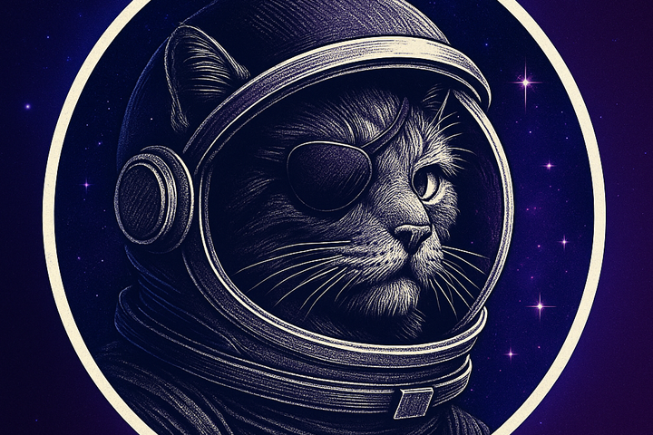

Nuestra misión
¡Saludos, terrícola curioso! Estás a punto de conocer el corazón peludo de la galaxia: Guardianes de los Michis, el refugio estelar más legendario desde que los gatos descubrieron cómo hackear los sistemas de navegación espacial. Somos una tropa de rescatistas felinos que opera desde la Nave Madre Siete Ronroneos, una fortaleza cósmica estacionada en la órbita de la Nebulosa Bigotes Brillantes, a solo un salto hiperespacial del Cúmulo de Andrómeda. Nuestra misión: rescatar michis de planetas olvidados, estaciones espaciales en quiebra y las temidas garras de los alienígenas alérgicos al pelo.

Fundada por el mítico Comandante Sumir (según la leyenda, desvió un asteroide con un solo maullido), nuestra organización combina tecnología de punta (como localizadores de ronroneos ultrasensibles) con un amor inquebrantable por los felinos. Cada michi que pasa por nuestra nave es entrenado en las artes de la siesta galáctica, el salto anti-gravedad y, por supuesto, el arte de derretir corazones humanos.
¿Querés unirte a nuestra misión? Adoptá un michi, doná latitas o simplemente vení a maravillarte con nuestra flota de gatitos listos para conquistar tu sistema solar. ¡En Guardianes de los Michis, cada ronroneo es una supernova de amor! 🌌😺